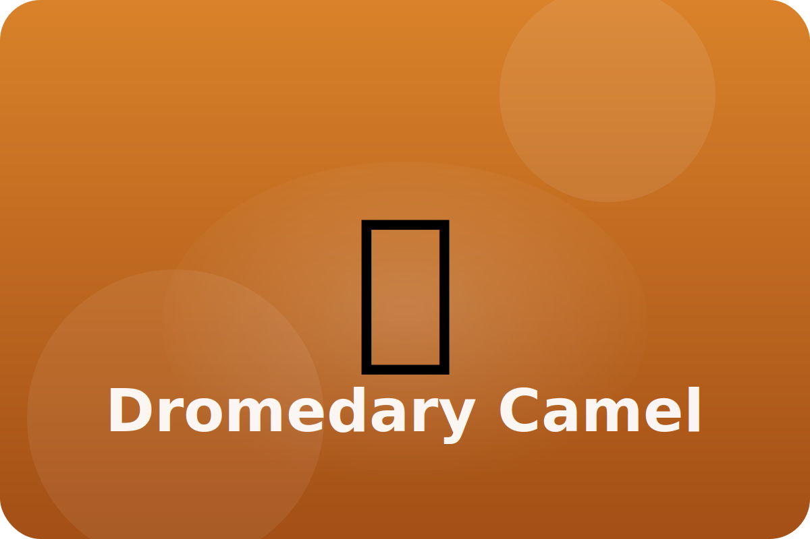

Desert
One hump, many tricks
Dromedary camels carry people and supplies across sandy deserts. Their bodies save water and stay steady on soft ground.
Fat-Filled Hump
The camel's hump stores fat that can turn into water and energy when food is scarce.
Closing Nostrils
Camels can close their nostrils to keep out blowing sand during desert storms.
Wide Feet
Large, padded feet spread out to stop the camel from sinking into sand.